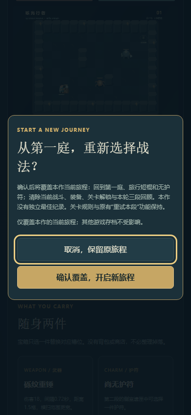
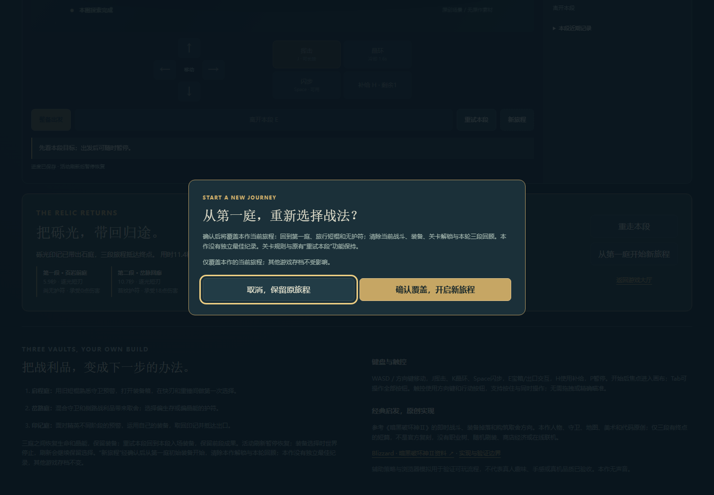
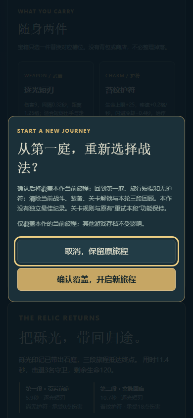
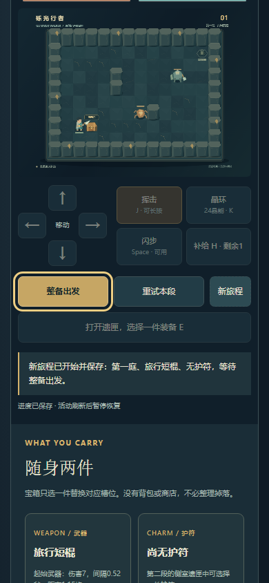

进行中和结果区均提供入口。打开确认框时先清除按住输入并暂停，默认焦点在“取消，保留原旅程”。确认才重置本作当前关卡、装备、解锁和本轮完成回顾，返回第一庭、旅行短棍和无护符。没有独立最佳纪录，未新增跨旅程历史榜。其他游戏存档不变，原有关卡重试继续恢复本段入场装备并保留前段回顾。
上一轮使用临时浏览器上下文，没有留下持久完成档。因此本轮遵守不重跑三关的范围：进行中来自普通UI真实操作；完成态使用从已发布模型证明生成的合法旧格式夹具，明确不是本轮自然通关，也不是复用真实完成会话。




node scripts/test_glimmer_new_journey.mjs --fixture：验证旧格式完成态可读、新旅程与当前段重试状态隔离、旧对象不被工厂修改、只写本作key及失败保留旧档。python scripts/test_glimmer_new_journey_ui.py执行上述分项；原始UI结果明确标注完成态来源。
未改引擎、关卡、数值或存档格式。未重跑完整三关、其他41项或全站QA。原三关正常UI与模型路线证据继续保留。真人体验、真手机、真实OS后台与审美边界没有因本次入口修复而变成已验收。